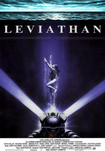
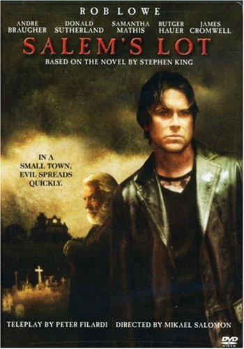
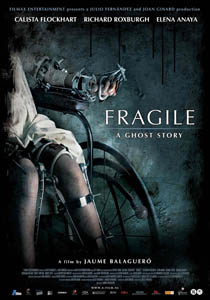
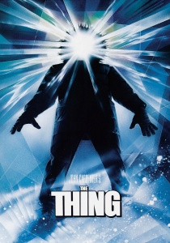
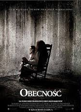

Witam
Mam na imię Adrianna. Jestem absolwentką Biologii oraz studiów podyplomowych na kierunku Testowanie Oprogramowania. Mam 6 lat doświadczenia zawodowego w logistyce oraz 1 rok jako tester oprogramowania. Interesuję się filmami z gatunku horror, narciarstwem i windsurfingiem. Zapraszam do przeczytania kilku słów o mnie, moim doświadczeniu i hobby.
Curiculum Vitae
Edukacja:- 2016 - Uniwersytet Jagieloński w Krakowie, kierunek Testowanie Oprogramowania, studia podyplomowe
- 2007 - Uniwersytet Jagielloński w Krakowie, kierunek Biologia, studia magisterskie
- 2002 - Liceum Ogólnokształcące im. Stanisława Wyspiańskiego w Rymanowie, profil ogólny
- Od 2019 UBS, Kraków, Tester manualny
- 2009-2015 JAS-FBG S.A, Kraków, Zastępca kierownika Spedycji Krajowej
- 2008-2009 - Okręgowa Komisja Egzaminacyjna, Pracownik administracyjno-biurowy
- 2007 - Szpital Uniwersytecki Collegium Medicum UJ, Kraków, Praktyka w dziale kadr i rachuby szpitala
- 2004-2006 - Hotel Bydgoska, Kraków, Pracownik administracyjno-biurowy
- ITIL, wprowadzenie do tematyki Service Support & Service Delivery
- Metody rekrutacji i selekcji stosowane przez pracodawców
- podstawowa znajomość: HTML, CSS, SQL, Linux
- znajomość oprogramowania: spedycyjnego (Marcos, Trans), bazy klientów (CRM7), pakietu MS OFFICE
- j. angielski – poziom średniozaazansowany
- prawo jazdy kat. B
- film (horror)
- anatomia człowieka
- sport: narciarstwo, pływanie, windsurfing
Moje hobby:


Ulubione filmy:
|
Doom (2005) reżyser: Andrzej Bartkowiak |
Karl Urban, Dwayne Jonson, Rosamund Pike, Ben Daniels | Potężna organizacja UAC prowadzi sciśle tajne eksperymenty w kompleksie badawczym na Marsie. Obiektem badań są pozostałosci po wymarlej, obcej cywilizacji. Coś jednak wymyka się spod kontroli i wprowadza chaos na terenie stacji naukowej. Na miejsce zostaje wysłana specjalna jednostka wojskowa RRTS, dowodzona przez "Sierzanta" (Dwayne Johnson). W skład ekipy wchodzi tez m.in John "Reaper" Grimm (Karl Urban), którego siostra Samantha (Rosamund Pike) znajduje się w marsjańskim ośrodku. | |
|  |
Leviathan (1989) reżyser: George P.Cosmatos |
Peter Weller, Richard Crenna, Amanda Pays, Daniel Stern | Załoga górników glębinowych, korporacji Tri-Oceanic podczas rutynowych prac natrafia na wrak rosyjskiej łodzi podwodnej o nazwie Leviathan.W celu badawczym zabierają z tego miejsca kilka przedmiotów do swojej bazy, między innymi dziennik kapitana i butelkę wódki, która okazała się być zakażona. Następnego ranka jeden z członków grupy zapada na dziwną chorobę, a jego ciało zaczyna się zmieniać. |
|  |
Salem's Lot (2004) reżyser: Mikael Salomon |
Rob Lowe, Dan Byrd, Donald Sutherland, Rutger Hauer | Film powstał na podstawie książki Stephena Kinga pod tym samym tytułem. W małym prowincjonalnym miasteczku mają miejsce niewytłumaczalne zdarzenia: znikają i giną dorośli z dziećmi, a zbrodnie wydają się być ze sobą powiązane. Czy Salem nawiedziły istoty nie z tego świata próbujące zaspokoić swoje żądze? Wszystko wskazuje na to, że tak. Ludzie próbują zaradzić nieszczęsciom i przeciwstawić się potworom... |
|  |
Fragile (2005) reżyser: Jaume Balagueró |
Calista Flockhart, Richard Roxburg, Elena Anaya, Colin McFarlane | Szpital dziecięcy "Mercy Falls" ma zostać zamknięty. Jednak wypadek kolejowy sprawia, że szpital musi użyczyć swoich miejsc dla poszkodowanych dzieci. Do pomocy w szpitalu zostaje oddelegowana Amy - młoda pielęgniarka z Londynu. Wkrótce odkrywa, że jej małym pacjentom zagraża wielkie niebezpieczeństwo. Dzieci są zdenerwowane i przerażone czymś nieuchwytnym i niewidzialnym, co nazywają "mechaniczna dziewczynka". Twierdzą, że duch mieszka na 3 pietrze szpitala, które zostalo zamknięte ponad 40 lat temu. Amy musi chronić dzieci i odkryć mroczny sekret, bo duch dziewczynki gotowy jest na wszystko, by jak najwiecej dzieci dotrzymalo mu towarzystwa... |
|  |
The Thing (1982) reżyser: John Carpenter |
Kurt Russell, David Clennon, Keith David, Wilford Brimley | Załoga amerykanskiej bazy na Antarktydzie jest świadkiem dziwnego zdarzenia. Norweski helikopter ze snajperem na pokładzie goni psa. Zwierze ucieka w kierunku Amerykanów. Kiedy wbiega miedzy zabudowania, Norwedzy próbują je zastrzelić. W wyniku własnej niefrasobliwości wysadzają się. Nikt nie jest w stanie powiedzieć, co tak naprawdę się stało. Amerykanie udają się do bazy Norwegów, której wszyscy mieszkancy nie zyją. Tymczasem przygarniete zwierze, zamknięte na noc wraz z innymi psami, zamienia sie w bestie. Wszystko wskazuje na to, ze badacze maja do czynienia z inteligentną forma życia, która jest w stanie dokladnie odtworzyc każdą żywą istotę. Chwilowo sytuacje udaje się opanować, jednak nie wiadomo, kto sposród zalogi jest zainfekowany... |
|  |
The Conjuring (2013) reżyser: James Wan |
Patrick Wilson, Vera Farmiga, Lili Taylor, Ron Livingston | Lorraine Warren (Vera Farmiga) i Ed Warren (Patrick Wilson) to badacze zjawisk paranormalnych. Pewnego dnia zostają poproszeni o pomoc przez przerażona rodzine mieszkająca w starym domu na uboczu. Okazuje się, że domownicy są nawiedzani przez tajemniczą zjawe, która nie chce dac im spokoju. Para badaczy staje do walki z najstraszniejszym demonem, z jakim kiedykolwiek miała do czynienia. |
Porozmawiajmy :)
Jeśli chciał(a)byś sie ze mną skontaktować, masz jakieś fajne projekty dla mnie, to nie wahaj się ze mną skontaktować: a.szybka@gmail
© 2020 Adrianna Tasarz
Znajdziesz mnie na: